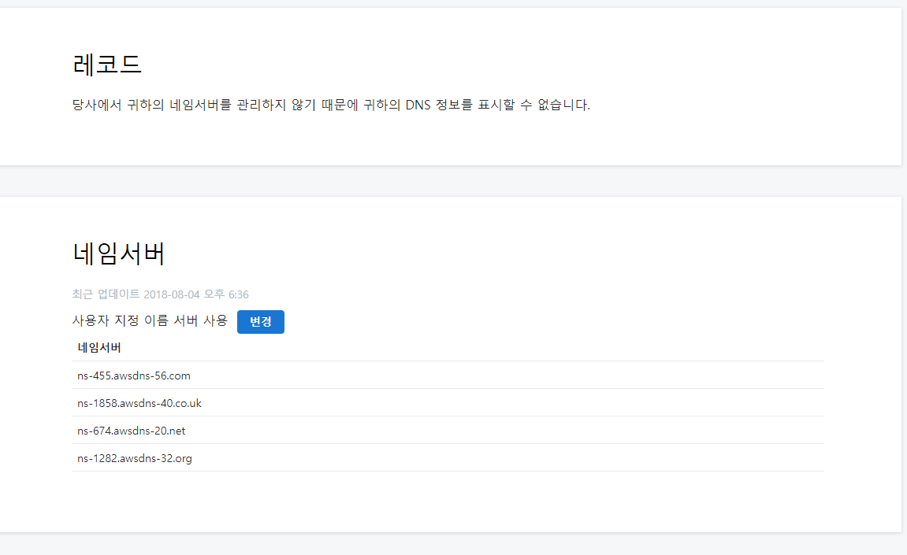

-
먼저 elastic ip를 할당받는다.(고정아이피)
-
dns와 연결한다(godaddy)xns를 godaddy에서 route 53으로 변경(마지막 '.'은 지워줘야 입력이 된다)

-
기본값(접속 ip[elastic ip])를 레코드에 추가해준다.
 -----시간이 지난 후, 변경사항이 적용.
-----시간이 지난 후, 변경사항이 적용. -
위 과정을 거치면 접속이 안되거나 문제가 발생할 수 있다.(로그인 불가, css 깨짐 등) 이 문제를 해결하기 위해 "eip"/phpmyadmin 접속
-
db값 변경

-
접속확인
**문제점**
godaddy에서 >> amazon route 53으로 네임서버 연결 후, 기본값을 설정하고나서, 나는 로그인페이지가 안켜지고 수정씌는 아예 페이지가 css가 깨지는 현상 발견.
**해결책**
phpmyadmin으로 wordpress로 접속하여, wp_option 테이블의 siteurl,site의 값을 elastic ip로 변경해줬다.(해결)